Every isolation target the simulator has, drawn from the real
BodyParts3D geometry in public/models/ by the real resolver in
src/simulator/data/atlasResolver.ts. Left is anterior, right is
lateral. Colour is the anatomical system, matching the app.
No lighting rig, no tone mapping, no shader: if a part is
missing here the lookup is wrong, and if a sheet is right but the app is not
the renderer is. Regenerate with npm run sheets:simulator.
thoracoacromial8 parts · 3,832 trianglesarterial 8
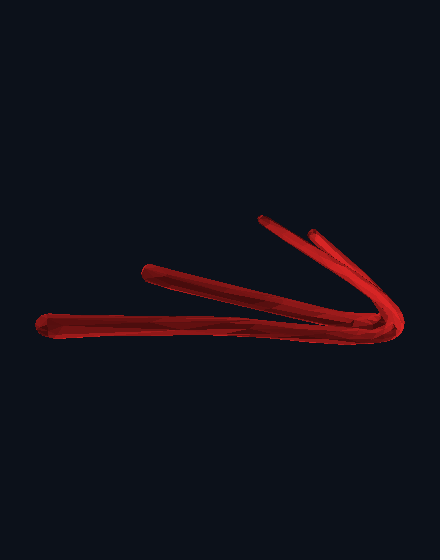
post_circumflex_humeral4 parts · 1,368 trianglesarterial 4
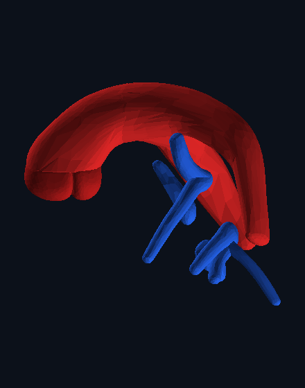
pulmonary_trunk13 parts · 8,964 trianglesvenous 7 cardiac 3 arterial 3
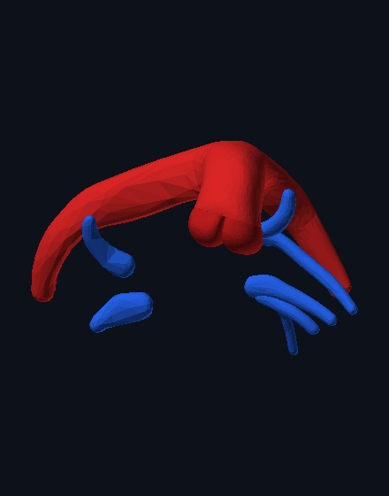
pulmonary_veins13 parts · 8,964 trianglesvenous 7 cardiac 3 arterial 3
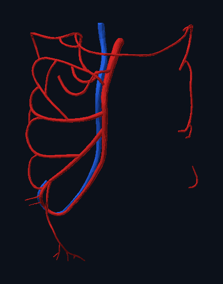
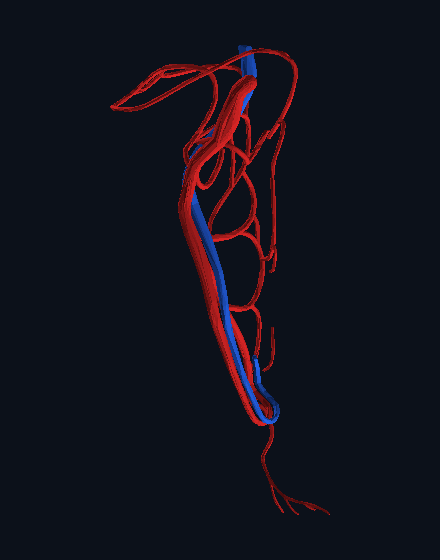
superior_mesenteric_artery17 parts · 7,120 trianglesarterial 16 venous 1
Not in this atlas
BodyParts3D models the CNS and the nerves of the orbit and holds
no peripheral nerves at all. These resolve to nothing on purpose — a plausible
substitute is worse than a blank, because a student cannot tell them apart.
not in this atlas
vagus_nerveBodyParts3D models the brain, brainstem and the nerves of the orbit. It carries no peripheral nerves, so this one cannot be drawn — the notes beside the model still describe it in full.
not in this atlas
phrenic_nerveBodyParts3D models the brain, brainstem and the nerves of the orbit. It carries no peripheral nerves, so this one cannot be drawn — the notes beside the model still describe it in full.
not in this atlas
ascitesThis is a clinical state rather than a structure, so it has no mesh of its own. Pick an organ to isolate.
not in this atlas
snakebiteThis is a clinical state rather than a structure, so it has no mesh of its own. Pick an organ to isolate.
not in this atlas
pectoral_nervesBodyParts3D models the brain, brainstem and the nerves of the orbit. It carries no peripheral nerves, so this one cannot be drawn — the notes beside the model still describe it in full.
not in this atlas
axillary_nerveBodyParts3D models the brain, brainstem and the nerves of the orbit. It carries no peripheral nerves, so this one cannot be drawn — the notes beside the model still describe it in full.
not in this atlas
splanchnic_nervesBodyParts3D models the brain, brainstem and the nerves of the orbit. It carries no peripheral nerves, so this one cannot be drawn — the notes beside the model still describe it in full.
Anatomical systems
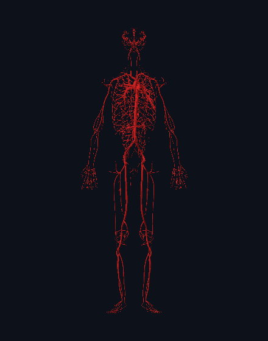
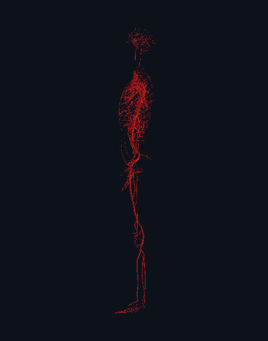
arterial639 parts · 333,798 trianglesarterial 639
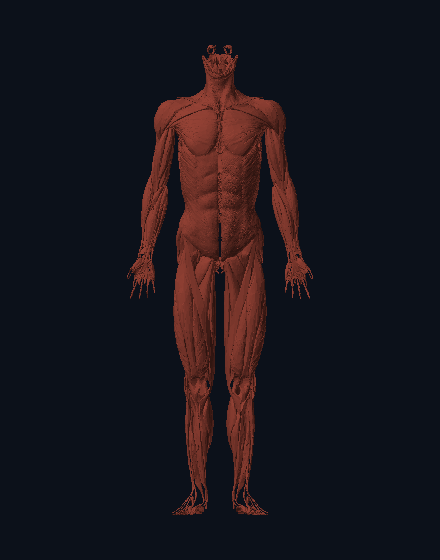
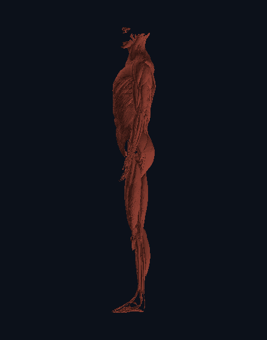
muscular402 parts · 656,120 trianglesmuscular 402
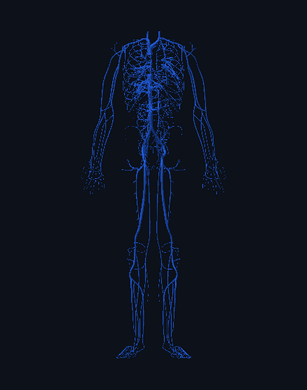
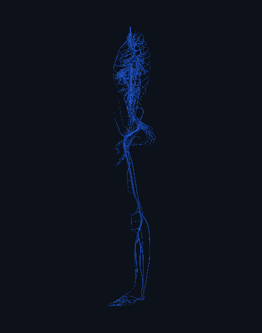
venous395 parts · 274,250 trianglesvenous 395
skeletal296 parts · 338,056 trianglesskeletal 296nervous144 parts · 213,436 trianglesnervous 144respiratory119 parts · 130,410 trianglesrespiratory 119digestive106 parts · 117,482 trianglesdigestive 106sensory45 parts · 109,348 trianglessensory 45connective40 parts · 45,524 trianglesconnective 40cardiac18 parts · 38,778 trianglescardiac 18reproductive12 parts · 6,386 trianglesreproductive 12urinary6 parts · 5,100 trianglesurinary 6integumentary5 parts · 60,362 trianglesintegumentary 5endocrine4 parts · 4,756 trianglesendocrine 4lymphatic3 parts · 2,794 triangleslymphatic 3
2234 parts ·
2,288,268 triangles · BodyParts3D 4.0 · CC BY 4.0